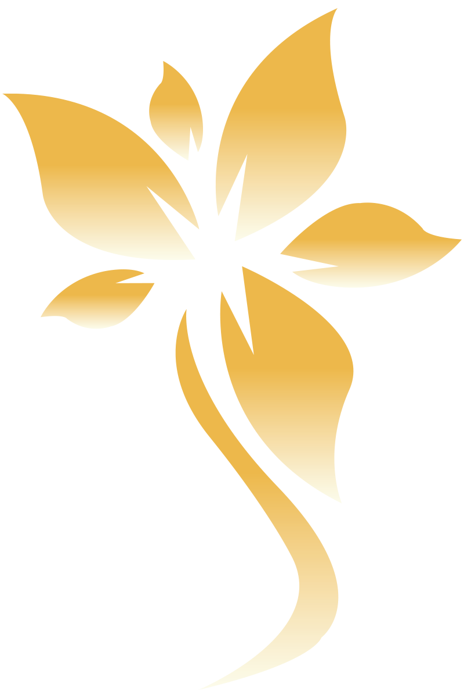
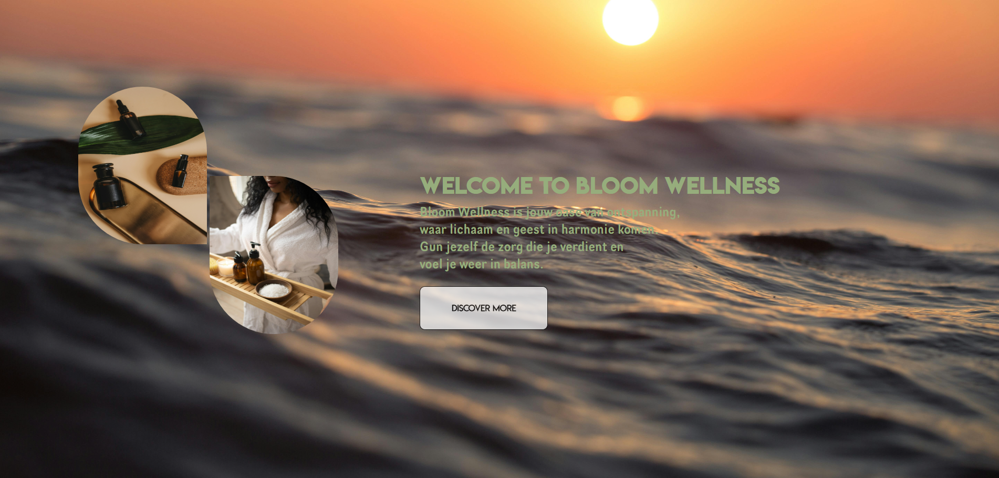

Projects
GIP-project: Bloom Wellness
Bloom Wellness is mijn GIP-project rond welzijn en innerlijke rust. Ik ontwikkelde een zachte, natuurlijke branding en een die bezoekers uitnodigt om te vertragen, te ontspannen en beter voor zichzelf te zorgen.
GIP-project: animatie

Voor mijn GIP Bloom Wellness maakte ik een animatiefilmpje om de sfeer en visie van het wellnessconcept over te brengen. De animatie focust op rust, balans en zelfzorg en zet sterk in op emotie en beleving. Zachte kleuren en vloeiende bewegingen versterken de branding.
GIP-project: website
Ik ontwierp een website voor Bloom Wellness als informatief platform voor het concept en de diensten. De nadruk ligt op gebruiksvriendelijkheid, duidelijke navigatie en een rustige uitstraling. Zo sluit het webdesign volledig aan bij de identiteit van Bloom Wellness.